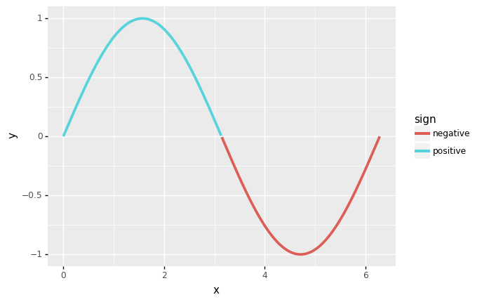
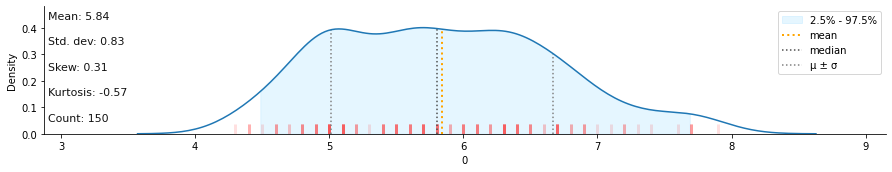

Home
datar
Port of R data packages (tidyr, dplyr, tibble, etc) in python, using pipda.
Installtion
pip install -U datar
Philosophy
- Try to keep API consistent with
tidyr/dplyr - Try not to change python's default behaviors (i.e, 0-based indexing)
Example usage
from datar import f
from datar.dplyr import mutate, filter, if_else
from datar.tibble import tibble
df = tibble(
x=range(4),
y=['zero', 'one', 'two', 'three']
)
df >> mutate(z=f.x)
"""# output
x y z
0 0 zero 0
1 1 one 1
2 2 two 2
3 3 three 3
"""
df >> mutate(z=if_else(f.x>1, 1, 0))
"""# output:
x y z
0 0 zero 0
1 1 one 0
2 2 two 1
3 3 three 1
"""
df >> filter(f.x>1)
"""# output:
x y
2 2 two
3 3 three
"""
df >> mutate(z=if_else(f.x>1, 1, 0)) >> filter(f.z==1)
"""# output:
x y z
2 2 two 1
3 3 three 1
"""
# works with plotnine
import numpy
from datar.base import sin, pi
from plotnine import ggplot, aes, geom_line, theme_classic
df = tibble(x=numpy.linspace(0, 2*pi, 500))
(
df >>
mutate(y=sin(f.x), sign=if_else(f.y>=0, "positive", "negative")) >>
ggplot(aes(x='x', y='y')) + theme_classic()
) + geom_line(aes(color='sign'), size=1.2)

# very easy to integrate with other libraries
# for example: klib
import klib
from pipda import register_verb
from datar.datasets import iris
from datar.dplyr import pull
dist_plot = register_verb(func=klib.dist_plot)
iris >> pull(f.Sepal_Length, to_list=True) >> dist_plot()

Examples
To compare with dplyr's and tidyr's APIs, see:
- https://dplyr.tidyverse.org/reference/index.html and
- https://tidyr.tidyverse.org/reference/index.html
dplyr - One table verbs
- [x]
arrange(): Arrange rows by column values - [x]
count(),tally(),add_count(),add_tally(): Count observations by group - [x]
distinct(): Subset distinct/unique rows - [x]
filter(): Subset rows using column values - [x]
mutate(),transmute(): Create, modify, and delete columns - [x]
pull(): Extract a single column - [x]
relocate(): Change column order - [x]
rename(),rename_with(): Rename columns - [x]
select(): Subset columns using their names and types - [x]
summarise(),summarize(): Summarise each group to fewer rows - [x]
slice(),slice_head(),slice_tail(),slice_min(),slice_max(),slice_sample(): Subset rows using their positions (TODO: implement groupby-awareslice)
dplyr - Two table verbs
- [x]
bind_rows(),bind_cols(): Efficiently bind multiple data frames by row and column - [x]
inner_join(),left_join(),right_join(),full_join(): Mutating joins - [x]
nest_join(): Nest join (TODO: check API consistency) - [x]
semi_join(),anti_join(): Filtering joins (TODO: warning whenbyis not specified)
dplyr - Grouping
- [x]
group_by()ungroup(): Group by one or more variables - [x]
group_cols(): Select grouping variables - [x]
rowwise(): Group input by rows
dplyr - Vector functions
- [x]
across(),c_across(): Apply a function (or a set of functions) to a set of columns - [x]
between(): No need, usea < x < bin python instead - [x]
case_when(): A general vectorised if - [x]
coalesce(): Find first non-missing element - [x]
cumall(),cumany(),cummean(): Cumulativate versions of any, all, and mean - [x]
desc(): Descending order - [x]
if_else(): Vectorised if - [x]
lag(),lead(): Compute lagged or leading values - [x]
order_by(): A helper function for ordering window function output (will not be implemented). The behavior is implemented in the functions themselves (i.e,leadandlag). - [x]
n(),cur_data(),cur_data_all(),cur_group(),cur_group_id(),cur_group_rows(),cur_column(): Context dependent expressions - [x]
n_distinct(): Efficiently count the number of unique values in a set of vector - [x]
na_if(): Convert values to NA - [x]
near(): Compare two numeric vectors - [x]
nth(),first(),last(): Extract the first, last or nth value from a vector - [x]
row_number(),ntile(),min_rank(),dense_rank(),percent_rank(),cume_dist(): Windowed rank functions. - [x]
recode(),recode_factor(): Recode values
dplyr - Data
- [x]
band_members,band_instruments,band_instruments2: Band membership - [x]
starwars: Starwars characters - [x]
storms: Storm tracks data
dplyr - Experimental
Experimental functions in dplyr.
- [x]
group_map(),group_modify(),group_walk(): Apply a function to each group - [x]
group_trim(): Trim grouping structure - [x]
group_split(): Split data frame by groups - [x]
with_groups(): Perform an operation with temporary groups
tidyr - Pivoting
Pivoting changes the representation of a rectangular dataset, without changing the data inside of it.
- [x]
pivot_longer(): Pivot data from wide to long - [x]
pivot_wider(): Pivot data from long to wide
tidyr - Rectangling
Rectangling turns deeply nested lists into tidy tibbles.
- [ ]
hoist(),unnest_longer(),unnest_wider(),unnest_auto(): Rectangle a nested list into a tidy tibble
tidyr - Nesting
Nesting uses alternative representation of grouped data where a group becomes a single row containing a nested data frame.
- [ ]
nest(),unnest(): Nest and unnest
tidyr - Character vectors
Multiple variables are sometimes pasted together into a single column, and these tools help you separate back out into individual columns.
- [x]
extract(): Extract a character column into multiple columns using regular expression groups - [ ]
separate(): Separate a character column into multiple columns with a regular expression or numeric locations - [ ]
separate_rows(): Separate a collapsed column into multiple rows - [ ]
unite(): Unite multiple columns into one by pasting strings together
tidyr - Missing values
Tools for converting between implicit (absent rows) and explicit (NA) missing values, and for handling explicit NAs.
- [ ]
complete(): Complete a data frame with missing combinations of data - [ ]
drop_na(): Drop rows containing missing values - [ ]
expand(),crossing(),nesting(): Expand data frame to include all possible combinations of values - [x]
expand_grid(): Create a tibble from all combinations of inputs - [x]
fill(): Fill in missing values with previous or next value - [x]
replace_na(): Replace NAs with specified values
tidyr - Miscellanea
- [x]
uncount(): "Uncount" a data frame
tidyr - Data
- [x]
billboard: Song rankings for billboard top 100 in the year 2000 - [x]
construction: Completed construction in the US in 2018 - [x]
fish_encounters: Fish encounters - [x]
relig_income: Pew religion and income survey - [x]
smiths: Some data about the Smith family - [x]
table1,table3,table4a,table4b,table5: Example tabular representations - [x]
us_rent_income: US rent and income data - [x]
who,population: World Health Organization TB data - [x]
world_bank_pop: Population data from the world bank
datar - Specific verbs and functions
- [x]
get: Get an element, or a subset of a dataframe. - [x]
flatten: Flatten the whole dataframe into an array/list.